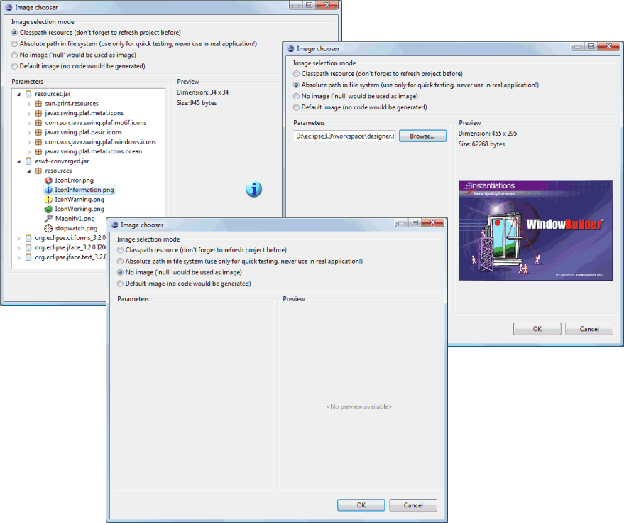
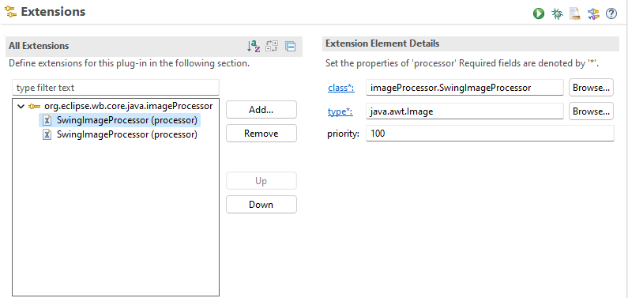

Click the  button to access the Image
Chooser and select an icon or image.
button to access the Image
Chooser and select an icon or image.
The Image Chooser has options for selecting images defined in the Classpath or at an Absolute path in the file system. Options are also provided to set the image to null or remove any generated image. A preview of the selected image is shown on the right.

User Extensions
The processors that the transformation from and to Java code are contributed
via the org.eclipse.wb.core.java.imageProcessor extension point
and contains the following fields:
-
class - Your custom image processor. This class should either extend
org.eclipse.wb.core.editor.icon.AbstractClasspathImageProcessorororg.eclipse.wb.core.editor.icon.AbstractFileImageProcessor. -
type - The image type that is managed by this processor. Currently supported types are:
-
Swing
-
java.awt.Image -
javax.swing.Icon
-
-
SWT
-
org.eclipse.swt.graphics.Image -
org.eclipse.jface.resource.ImageDescriptor
-
-
-
priority - Determines the order in which the processors are executed. The higher the priority, the earlier this contributed is handled. All internal WindowBuilder contributions have a priority of 0. When a processor was able to handle an image, all remaining processors are skipped.

The process method of the image processor class is used to transform the
expression in the Java code to a humanly-readable string. This string is
then displayed in the property table. The postOpen method is used to convert
the path that was selected in the image editor to valid Java code. The class
(SwingImageIcon in the following example) must be in the classpath of the
current project.
public class SwingImageProcessor extends AbstractClasspathImageProcessor {
@Override
public boolean process(IGenericProperty property, String[] value) {
JavaInfo javaInfo = property.getJavaInfo();
Expression expression = getFinalExpression(javaInfo, property.getExpression());
if (expression instanceof ClassInstanceCreation creation) {
if (AstNodeUtils.isCreation(creation, "imageProcessor.SwingImageIcon", "<init>(java.lang.String)" )) {
StringLiteral resourceLiteral = (StringLiteral) creation.arguments().get(0);
value[0] = prefix + resourceLiteral.getLiteralValue();
return true;
}
}
return false;
}
@Override
public boolean postOpen(IGenericProperty property, String path, String[] value) {
String pathSource = StringConverter.INSTANCE.toJavaSource(property.getJavaInfo(), path);
value[0] = "new imageProcessor.SwingImageIcon(" + pathSource + ")";
return true;
}
}